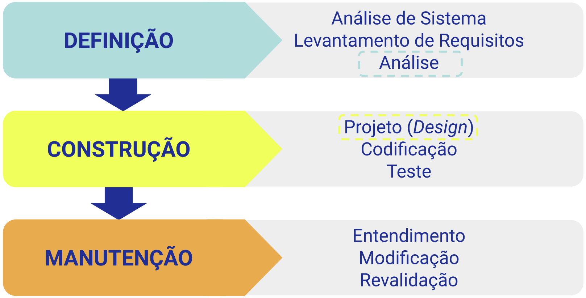
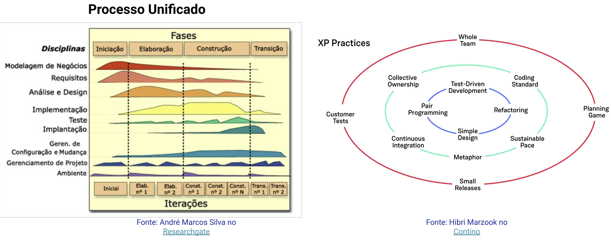
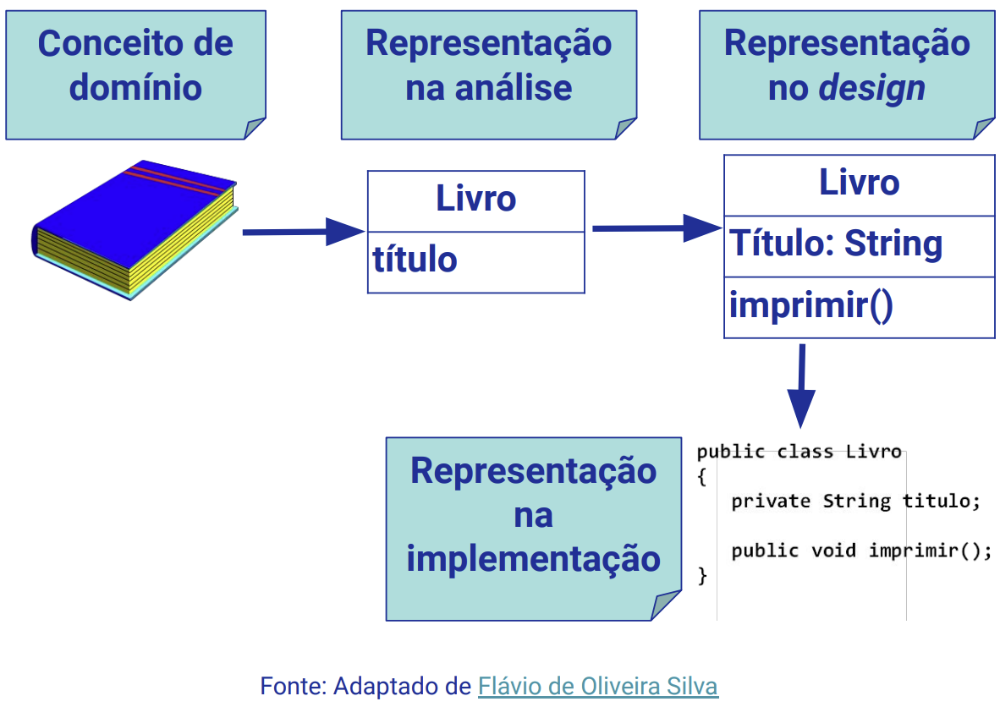
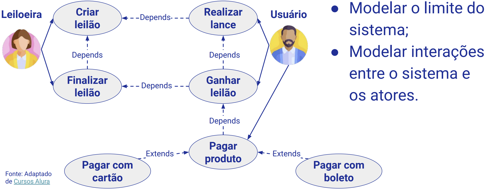
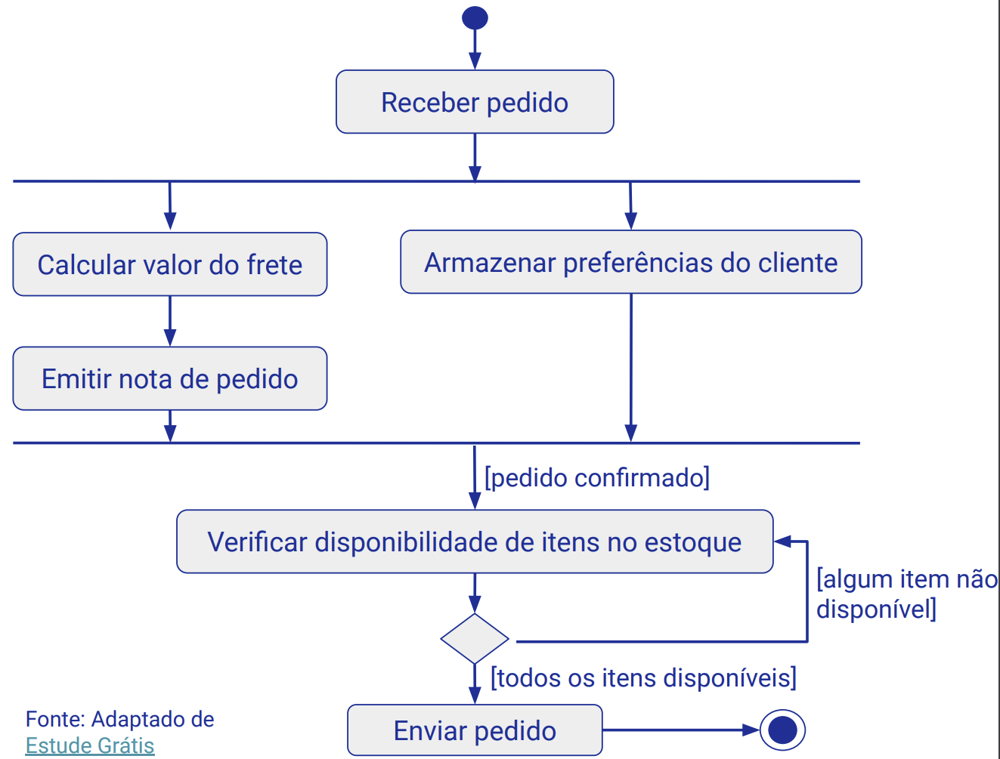
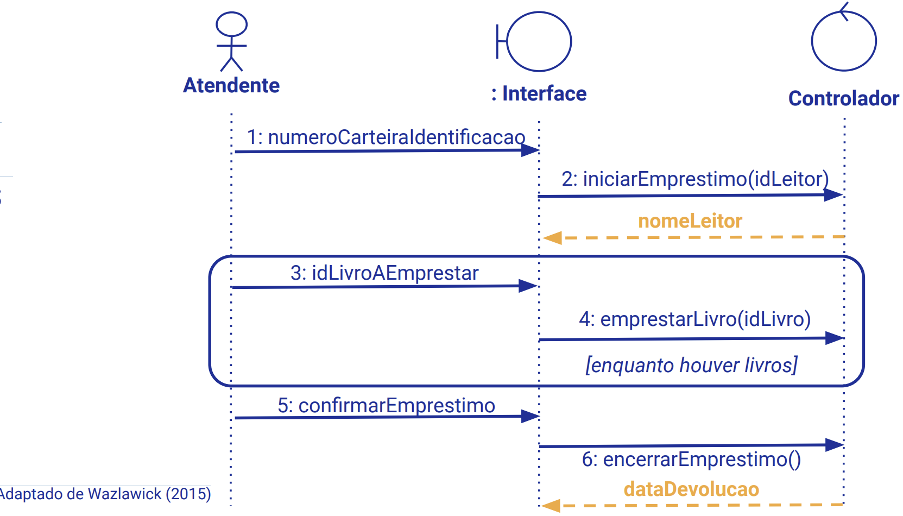
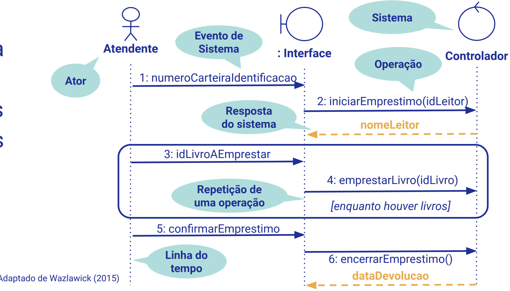
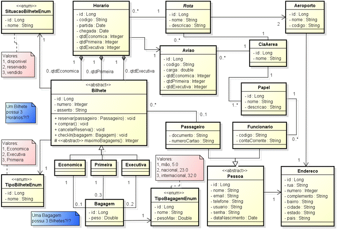

Disciplinas
ENGENHARIA DE SOFTWARE Concluído
Materiais
Vídeo 1 - [UFMS Digital] ENGENHARIA DE SOFTWARE - Módulo 3 - Unidade 2 - principais modelos e UML sendProf.ª ministrante: Débora Maria Barroso Paiva
Objetivo
- Entender as principais técnicas para gerenciamento de projetos e realizar uma vista geral sobre design de software.
Fases Genéricas do Processo de Software.

Modelos de Processo de Software.

Análise de software.
Visa identificar o que o sistema faz.
Artefatos de análise capturam os resultados do processo de investigação do domínio do problema.
Design de software.
Pretende criar uma solução (como) para o problema identificado pela análise.
Artefatos de design representam a arquitetura de software necessária para realizar concretamente o sistema.
Análise e design de software.
Um bom design deve considerar:
- Baixo acoplamento: estabelecer menor dependência entre as classes.
- Benefícios:
- Não é (ou é pouco) afetada por mudanças em outras classes;
- É mais simples de entender isoladamente;
- Mais chance de reuso.
- Alta coesão: manter as responsabilidades de cada classe fortemente relacionadas.
- Benefícios:
- Aumenta a clareza e a compreensão do projeto;
- Simplifica a manutenção;
- Mais chance de reuso.
Por que usar modelos?
Entender o que está sendo construído:
- obter visualização do delineamento das ideias.
Melhorar a comunicação entre os membros da equipe e com os clientes.
Testar uma entidade antes de lhe dar forma.
Reduzir a complexidade.
Documentar um sistema existente.
Gerar uma implementação do sistema: engenharia dirigida a modelos.
Representação de um conceito.
Exemplo: o conceito de Livro em um sistema de Biblioteca.

Modelagem de Sistemas.
UML (Unified Modeling Language).
Linguagem de modelagem padrão para especificar, visualizar e documentar sistemas orientados a objetos.
Não é uma metodologia.
Diagramas da UML.
Diagramas estruturais:
- Diagramas de pacotes, de classes, de objetos, de estrutura composta, de componentes e de distribuição.
Diagramas comportamentais:
- Diagramas de casos de uso, de atividades e de estados.
Diagramas de interação:
- Diagramas de comunicação, sequência, tempo e visão geral de integração.
Três a cinco diagramas podem representar a essência de um sistema.
Diagrama de casos de uso.

Diagrama de atividades.
Modelar processos de negócios – humanos e automatizados;
Modelar fluxo de dados.

Diagrama de sequência.
Apoiar a identificação de operações e consultas do sistema.

Caso de uso e diagrama de sequência.
Veja a seguir o caso de uso referente ao diagrama de sequência apresentado.
Caso de uso: Emprestar livro Atores: Atendente, LeitorFluxo principal:
- O Leitor chega ao balcão de atendimento da biblioteca e diz ao atendente que deseja emprestar um ou mais livros da biblioteca.
- O Atendente solicita ao leitor sua carteirinha, seja de estudante ou professor.
- O Atendente informa ao sistema a identificação do leitor, iniciando o empréstimo.
- O Sistema exibe o nome do leitor.
- O Atendente solicita os livros a serem emprestados.
- Para cada um deles, informa ao sistema o código de identificação do livro.
- O Atendente confirma a finalização do empréstimo
- O Sistema registra o empréstimo e informa a data de devolução dos livros.
Tratamento de exceções (...)
Fonte: Adaptado de Wazlawick (2015)
Diagrama de sequência:
Apoiar a identificação de operações e consultas do sistema.

Diagrama de classes.
Serve para identificar os conceitos do domínio e o relacionamento entre eles.
É a decomposição de um domínio em conceitos ou objetos importantes.
Trata-se da representação visual de classes conceituais ou objetos do mundo real em um domínio.
Deve ser independente da solução física que virá a ser adotada e conter apenas elementos referentes ao domínio do problema.
Ficam delegados à fase de projeto os elementos da solução que se referem à computação, como:
- interfaces, formas de armazenamento (banco de dados), segurança de acesso, comunicação etc.

Quanto modelar?
Depende da organização e dos recursos disponíveis;
Modelagem ágil:
- “Valorize mais software funcionando do que documentação abrangente”;
- Criar diversos modelos em paralelo: modelagem mais produtiva.
Modele com outras pessoas: comunicar ideias, desenvolver visão comum do projeto.
Organize a participação ativa dos clientes.
Promova a posse coletiva: evitar “Seu modelo está errado”.
Crie conteúdo simples: desde que satisfaçam às necessidades dos clientes.
Use ferramentas simples.
Comprove com o código-fonte.
Considere a testabilidade.
Considerações finais.
Diferentes modelos para representar (abstrair) diferentes situações.
Uso de ferramentas são fundamentais.
- Por exemplo: StarUML - staruml.io
Atividades importantes: validação dos modelos, avaliação de qualidade, rastreabilidade.